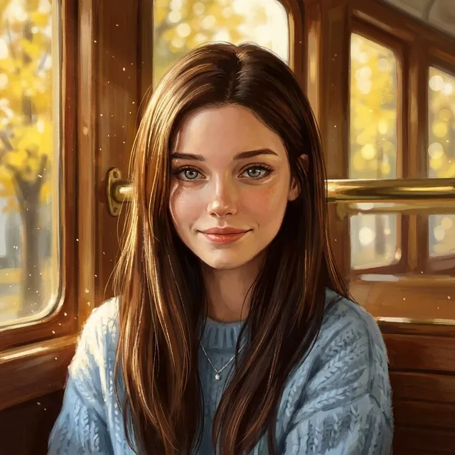
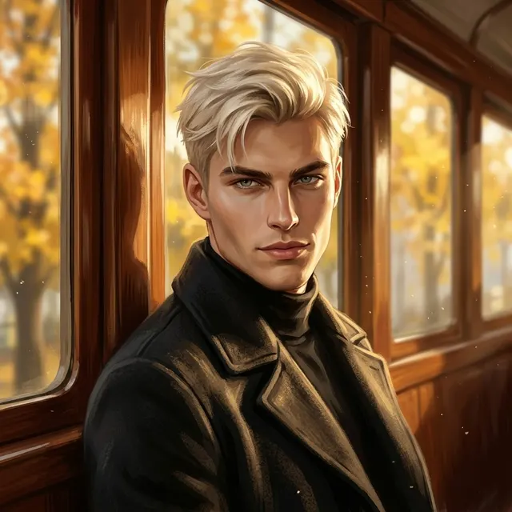
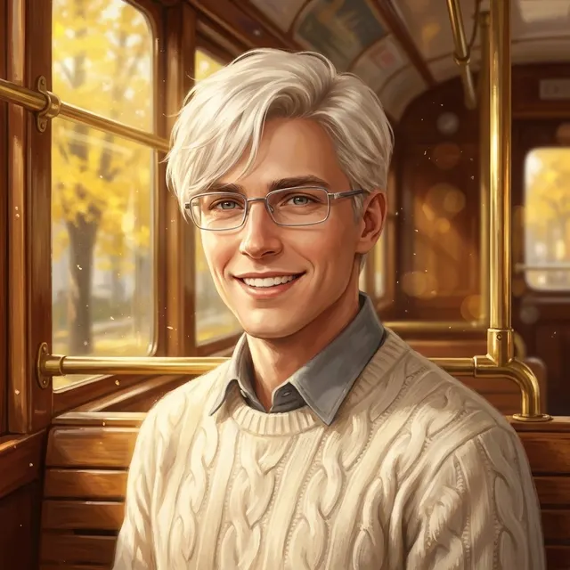
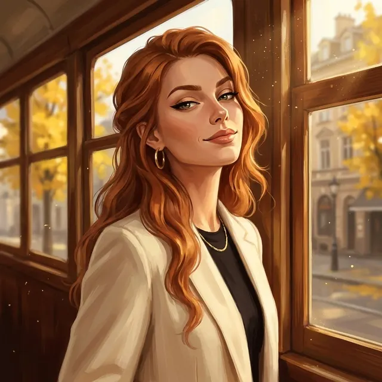
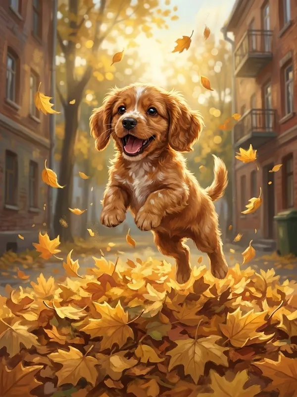
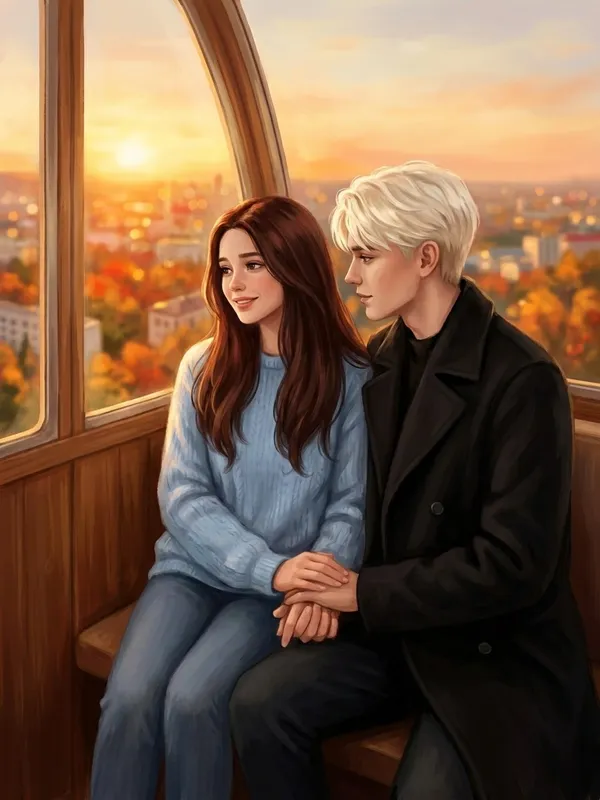
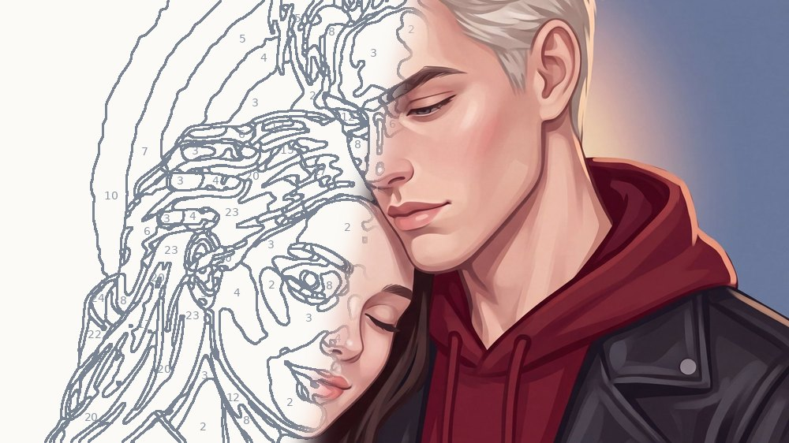
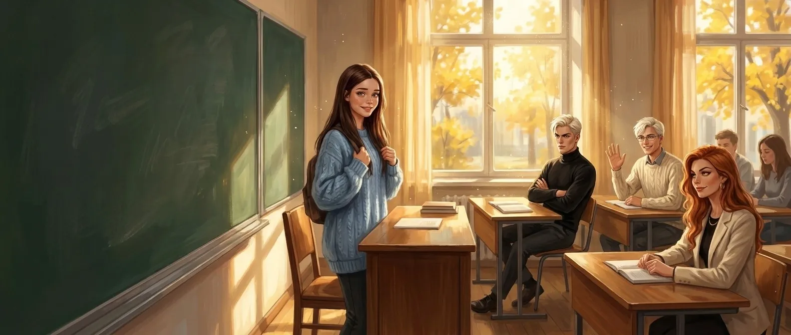

Игры
Играй прямо на сайте, с телефона или компьютера. Кристаллы 💎 общие для всех игр: подарок каждый день, награды за быстрые уровни и верные ответы. Прогресс сохраняется, а если войти в аккаунт, он не потеряется и на другом устройстве.

Слова из слова
Собирай слова из букв длинного слова из «Осколков». Больше 180 уровней, подсказки за кристаллы 💎.
Играть →



Чья это фраза?
Аня, Артур, Антон или Лика? Угадай, кто из героев это сказал. Каждый день новый раунд из десяти фраз.
Играть →


Найди пару
Открывай карточки с героями и находи пары. Чем быстрее, тем больше звёзд, а за звёзды — кристаллы 💎 для всех игр.
Играть →
Поймай сердечки
Артур ловит сердечки и золотые осколки и уворачивается от Лики. Управляй пальцем, набирай очки и кристаллы 💎.
Играть →
Раскраска
Раскрась героев «Осколков» по номерам прямо в телефоне. Готовая картинка становится точь-в-точь как иллюстрация — её можно скачать.
Раскрашивать →
Стань Аней
Игра с выборами по «Осколкам». Сейчас мы перерисовываем её в новом стиле. Скоро вернётся.